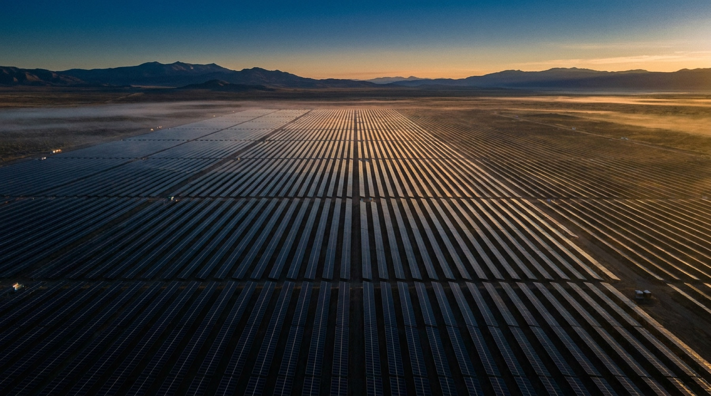
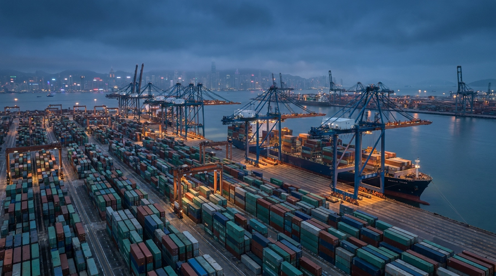
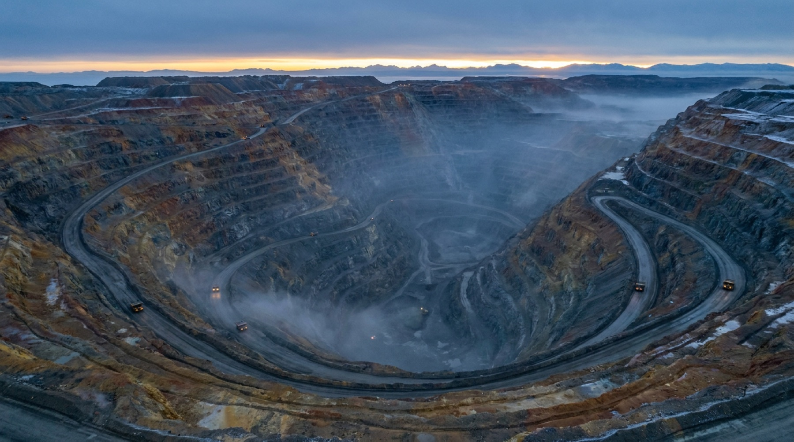

El mercado premia lo rápido. Nosotros buscamos lo que seguirá en pie cuando lo rápido ya haya pasado: activos esenciales, equipos que permanecen y operaciones capaces de atravesar ciclos completos.
01 · OrigenComprender antes de adquirir
02 · OperaciónMejorar sin ruido
03 · PermanenciaSostener con perspectiva
La cartera
Cuatro sectores. Un mismo criterio.
No son categorías aisladas. Son capas de un mismo sistema operativo: energía que activa, logística que conecta, recursos que abastecen e infraestructura que sostiene.

01
Activar
Energía
Activos de generación y redes que sostienen industria, ciudades y continuidad operativa. Inversiones pensadas para funcionar con disciplina durante ciclos completos.
Generación · transmisión

02
Conectar
Marítimo & logística
Puertos y cadenas logísticas que mantienen en movimiento materias primas, mercancías y economías. Infraestructura operada con precisión y perspectiva de largo plazo.
Puertos · cadenas logísticas

03
Abastecer
Minería & recursos
Operaciones y recursos críticos que hacen posible la industria contemporánea. Activos evaluados por calidad, disciplina operativa y permanencia.
Recursos críticos · reservas
04
Sostener
Infraestructura
Activos de conectividad y servicios esenciales que permiten que ciudades y empresas funcionen. Capital paciente aplicado a sistemas de larga vida.
Conectividad · servicios esenciales
La arquitectura del grupo
Un sistema de activos esenciales.
La escala no se comunica con volumen, sino mostrando cómo cada operación fortalece la siguiente.
Energía01 · activa
Marítimo02 · conecta
Recursos03 · abastece
Infraestructura04 · sostiene
Registro de propiedad · ATLAS INDEX
Una cartera. Veinticuatro historias operativas.
La cartera se presenta como un registro de propiedad, no como una vitrina. Los nombres y datos operativos se abren únicamente tras validación institucional.
24folios de propiedad acceso controlado
ATLAS / REGISTRO DE PROPIEDADEDICIÓN 24 · ACCESO CONTROLADO
Folio en consulta
Cada folio conserva identidad operativa sin revelar nombres, cifras sensibles ni contrapartes.
Sector
Energia
Region
Andes - generacion distribuida
Entrada
1998
Tesis
Generacion critica
SectorEnergia
GeografiaAndes - generacion distribuida
Adquisicion1998
CapacidadGeneracion critica
Plataforma de continuidad electrica para corredores industriales andinos.
El grupo en cifras
$6.4 MMCapital gestionado
24Compañías en propiedad
33 añosHorizonte medio de tenencia
0Ventas forzadas · en 33 años
Presencia
Cuatro puntos. Una sola operación.
Una red compacta de relaciones locales conecta los cuatro sectores con una misma disciplina de propiedad.
Quito00°13′S · Sede · Andes
Houston29°45′N · Energía
Róterdam51°55′N · Marítimo
Singapur01°17′N · Asia-Pacífico
Por presentación
Las mejores sociedades empiezan por una conversación.
ATLAS trabaja con un círculo reducido de propietarios, familias e instituciones. Cada conversación comienza con criterio y reserva.